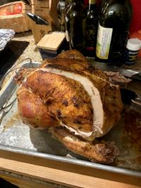

My family enjoys trying new recipes and exploring the holidays and traditions of other cultures through the food they eat. While this is just a pic of our last Thanksgiving turkey (it was a beauty!), last year we “celebrated” Diwali, Hannakah, and a traditional English Christmas that included a steamed pudding!